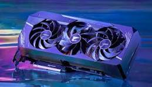
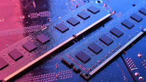

How to build your own pc
Building your own PC involves selecting and assembling individual hardware components of a computer, such as the processor, motherboard, memory, storage, and other parts, to create a customized configuration that meets your specific needs.
Cpu

- The CPU (Central Processing Unit), also known as the processor, is the main component of a computer responsible for executing instructions and processing data. It acts as the brain of the computer, performing calculations and operations to run programs and accomplish tasks.
Gpu

- The GPU (Graphics Processing Unit), also known as a graphics card, is a specialized electronic circuit designed to rapidly manipulate and alter memory to accelerate the creation of images in a frame buffer intended for output to a display device. It is primarily used for rendering graphics in video games, graphical user interfaces, and image and video editing programs.
Ram

- RAM (Random Access Memory) is a type of computer memory that can be accessed randomly, meaning any byte of memory can be accessed without touching the preceding bytes. It is used by the computer's processor to store and quickly access data that is actively being used or processed. RAM is volatile memory, meaning it loses its data when the computer is powered off. It plays a crucial role in determining the performance and multitasking capability of a computer system.
Power Supply

- The power supply, often abbreviated as PSU (Power Supply Unit), is a component of a computer that converts electrical power from an external source (such as a wall outlet) into usable power for the components within the computer. It provides the necessary voltage and current to power the CPU, GPU, motherboard, storage devices, and other components. The power supply also regulates and distributes power to ensure stable and reliable operation of the computer.